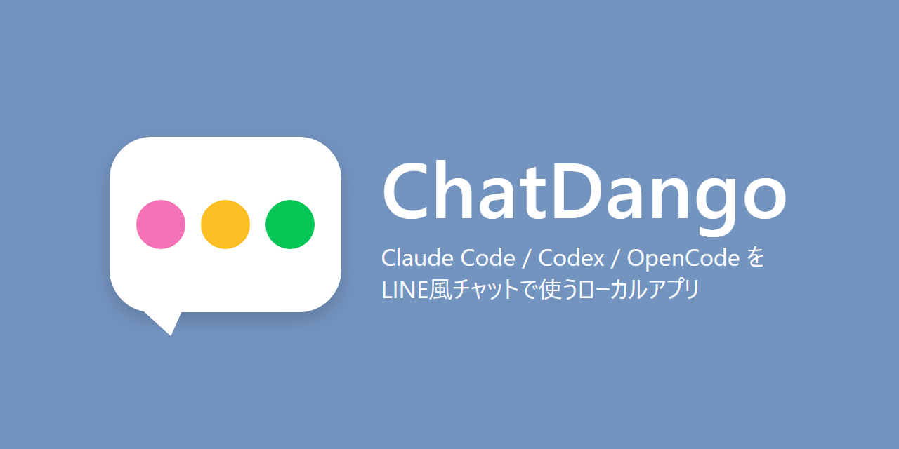
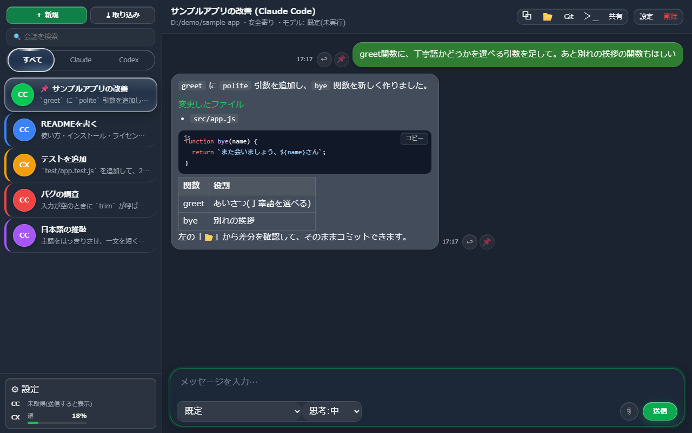
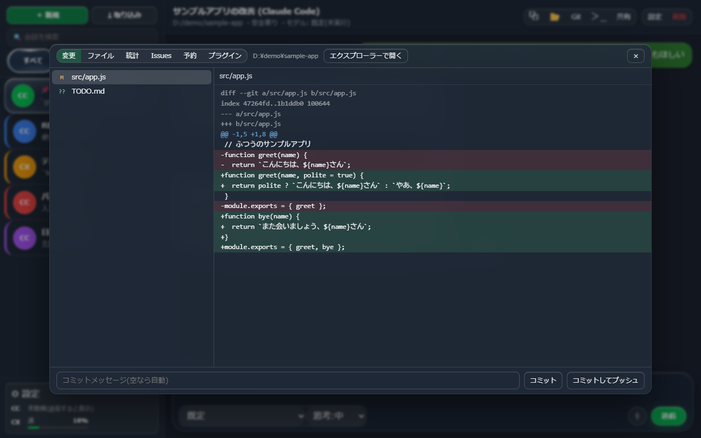

<!doctype html>
<html lang="ja">
<head>
<meta charset="utf-8">
<meta name="viewport" content="width=device-width,initial-scale=1">
<title>ChatDango — Claude Code / Codex / OpenCode をLINE風チャットで使うローカルアプリ</title>
<meta name="description" content="Claude Code・Codex・OpenCode を、LINEのようなチャット画面で使えるローカルアプリ。依存パッケージなし、Node.js だけで動きます。MITライセンス。">
<link rel="icon" href="favicon.ico">
<style>
:root{--bg:#14141a;--card:#1e1e27;--fg:#ececf3;--sub:#a0a0b4;--ac:#7c4dff;--ac2:#3182f6}
*{box-sizing:border-box}
body{margin:0;background:var(--bg);color:var(--fg);font-family:"Yu Gothic UI","Hiragino Sans",system-ui,sans-serif;line-height:1.8}
main{max-width:860px;margin:0 auto;padding:56px 20px}
header{text-align:center;margin-bottom:48px}
header img{width:128px;height:128px}
h1{font-size:2.2rem;margin:16px 0 8px}
.lead{color:var(--sub);font-size:1.05rem}
.btn{display:inline-block;margin:24px 8px 0;padding:12px 28px;border-radius:10px;background:linear-gradient(135deg,var(--ac),var(--ac2));color:#fff;text-decoration:none;font-weight:bold}
.btn.sub{background:var(--card);border:1px solid #33334a}
h2{margin-top:48px;border-left:4px solid var(--ac);padding-left:12px;font-size:1.3rem}
.grid{display:grid;grid-template-columns:repeat(auto-fit,minmax(240px,1fr));gap:16px}
.card{background:var(--card);border-radius:12px;padding:18px 20px}
.card h3{margin:0 0 6px;font-size:1.05rem}
.card p{margin:0;color:var(--sub);font-size:.95rem}
table{width:100%;border-collapse:collapse;background:var(--card);border-radius:12px;overflow:hidden}
td{padding:10px 16px;border-bottom:1px solid #2c2c3a}td:first-child{color:var(--sub);width:9em}
.note{background:#2a2433;border:1px solid #4b3a66;border-radius:12px;padding:14px 18px;color:#d9cdf0}
footer{margin-top:64px;text-align:center;color:var(--sub);font-size:.85rem}
a{color:#9db8ff}
.shot{width:100%;height:<main>
<header>
  
  <h1>ChatDango</h1>
  <p class="lead">Claude Code / Codex / OpenCode を、LINE風のチャット画面で使えるローカルアプリ</p>
  <a class="btn" href="https://github.com/phenom0525/ChatDango">GitHub で詳細を見る</a>
  <a class="btn sub" href="https://github.com/phenom0525/ChatDango#readme">README(紹介動画あり)</a>
</header>

<h2>特徴</h2>
<div class="grid">
  <div class="card"><h3>LINE風のチャット</h3><p>会話ごとに名前・色・アイコンを付けて一覧に並べられます。続きから話すと自動で再開されます。</p></div>
  <div class="card"><h3>作業パネル</h3><p>AI が変更したファイルと差分を、チャットの横でその場で確認できます。戻すためのチェックポイントも作れます。</p></div>
  <div class="card"><h3>スマホからも</h3><p>PCのブラウザに加え、Tailscale 経由でスマホからも使えます。</p></div>
  <div class="card"><h3>読み上げ・テーマ</h3><p>返信の読み上げ(VOICEVOX 対応)と、文字の大きさ・フォント・明るさの変更に対応。</p></div>
</div>

<h2>画面</h2>



<h2>仕様</h2>
<table>
  <tr><td>動作環境</td><td>Windows / Node.js</td></tr>
  <tr><td>対応ツール</td><td>Claude Code・Codex・OpenCode</td></tr>
  <tr><td>画面</td><td>ブラウザ(依存パッケージなし)</td></tr>
  <tr><td>ライセンス</td><td>MIT</td></tr>
</table>

<footer>
  <p><a href="../">← PONTAMUX Apps</a></p>
  <p>紹介動画の音声: VOICEVOX:ずんだもん / 動画で使用した yomiyasu は nanaism さんの作品です。</p>
  <p>© PONTAMUX · <a href="https://github.com/phenom0525/ChatDango">github.com/phenom0525/ChatDango</a></p>
</footer>
です。本ソフトは公式のものではありません。</p>
  <p>© PONTAMUX · <a href="https://github.com/PONTAMUX/vcast-studio">github.com/PONTAMUX/vcast-studio</a></p>
</footer>
</main>
</body>
</html>
